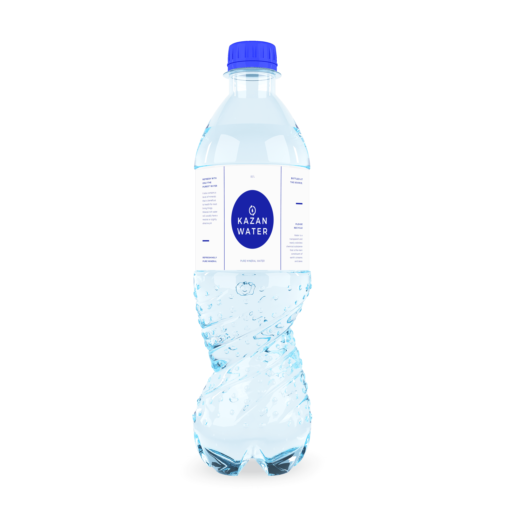
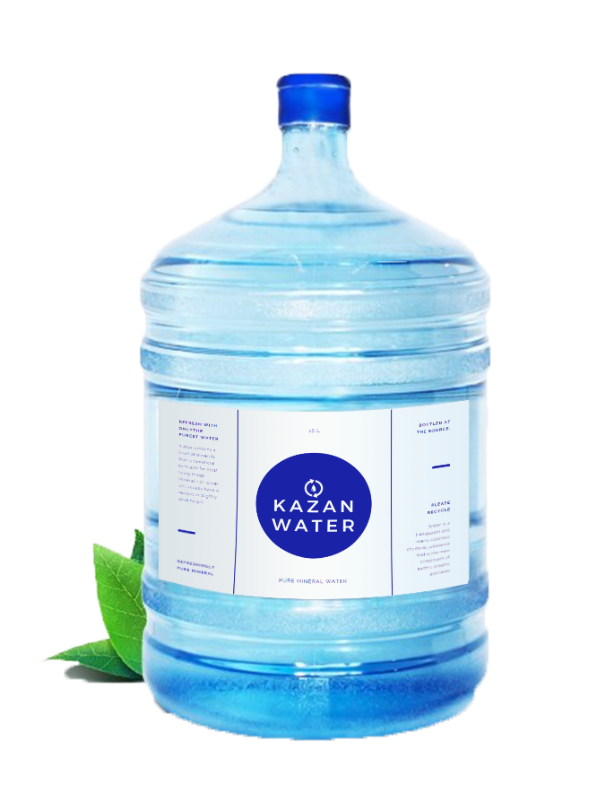
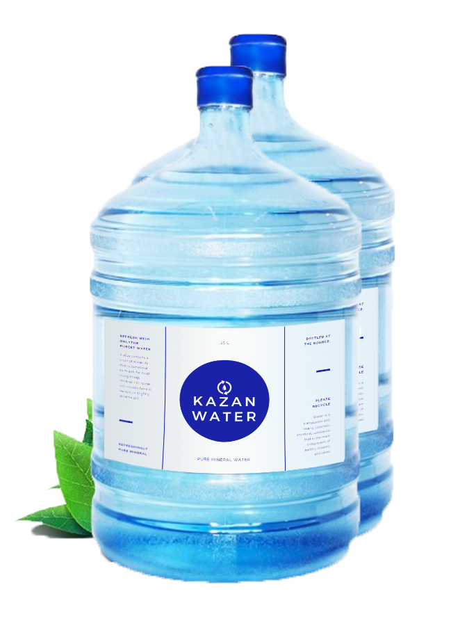

МИНЕРАЛЬНАЯ ВОДА
ДЛЯ КАЖДОГО ДНЯ
Вода – это один из самых важных источников жизни на Земле. Эта удивительная жидкость является незаменимым веществом, которое входит в состав всех живых организмов.
Что входит в состав нашей продукции
-
Кальций+
5-12 mg/dm3
Способствует свертыванию крови, так как наряду с другими веществами участвует в формировании тромбов, которые закупоривают участки поврежденных тканей. Блокирует усвоение насыщенных жиров в желудке и кишечнике.
-
Магний
2-5 mg/dm3
Благотворно влияет на рост костей; нормализует сердечный ритм, снижает артериальное давление; регулирует уровень сахара в крови; устраняет судороги в мышцах; уменьшает боли в суставах.
-
Натрий
20-25 mg/dm3
На натрий возложены такие важные функции, как: нормализация водного баланса; поддержание кислотно-щелочного баланса; обеспечение мембранного транспорта и др.
-
Хлор
~46 mg/dm3
Регулирует водный и кислотно-щелочной баланс, выводит жидкость и соли из организма в процессе осморегуляции, стимулирует нормальное пищеварение, нормализует состояние эритроцитов, очищает печень от жира.
-
Водород
6,8-7,3
Единственный антиоксидант, способный легко преодолевать гематоэнцефалический барьер и устранять оксиданты в мозге. Он помогает доставлять полезные вещества во все клетки нашего организма, нормализуя его функции и обменные процессы.
-
Минерализация
90-140 mg/dm3
Вода содержит большое количество примесей, в том числе, минералов. Они создают еле уловимый вкус жидкости, к которому мы привыкаем.
Выберите воду для себя

Сет Маленький
Отлично подходит чтобы взять с собой на прогулку, в дорогу и т.д.
300 rub
Добавить в корзину

Сет Большой
Идеальный вариант качественной воды для дома, дачи и т.д.
1000 rub
Добавить в корзину

Сет 2 по 1.5
Скидка для наших покупателей, сет из 2 бутылок качественной воды.
1500 rub
Добавить в корзину